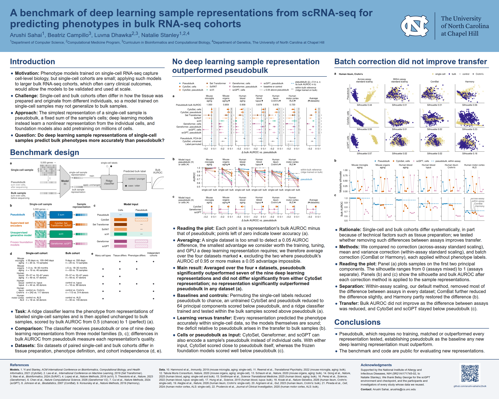

A benchmark of deep learning sample representations from scRNA‑seq for predicting phenotypes in bulk RNA‑seq cohorts
1Department of Computer Science, 2Computational Medicine Program, 3Curriculum in Bioinformatics and Computational Biology, 4Department of Genetics, The University of North Carolina at Chapel Hill
Presented at the Pacific Symposium on Biocomputing (PSB 2027, January 3–7, 2027) and Keystone Symposia (Banff, February 15–18, 2027).

Abstract
Phenotype models trained on single-cell RNA-seq capture cell-level biology, but single-cell cohorts are small. Applying such models to larger bulk RNA-seq cohorts, which often carry clinical outcomes, would allow the models to be validated and used at scale. Single-cell and bulk cohorts often differ in tissue preparation and originate from different individuals, so a model trained on single-cell samples may not generalize to bulk samples. The simplest representation of a single-cell sample is pseudobulk, a fixed sum of the sample's cells; deep learning models instead learn a nonlinear representation from the individual cells, and foundation models also add pretraining on millions of cells. We asked whether deep learning sample representations predict bulk phenotypes more accurately than pseudobulk.
We compared pseudobulk with nine deep learning representations from three model families: supervised set encoders (CytoSet, Set Transformer, and ScRAT), an unsupervised generative model (scVI), and frozen foundation models (Geneformer and scGPT). In six datasets of paired single-cell and bulk cohorts, spanning aging, lupus, Crohn's disease, and ALS, a ridge classifier was trained on representations of labeled single-cell samples, applied unchanged to bulk samples, and scored by bulk AUROC.
No deep learning representation significantly outperformed pseudobulk in any dataset. Averaged over the four datasets where pseudobulk's AUROC was below 0.95, leaving room for a 0.05 advantage, pseudobulk significantly outperformed seven of the nine representations by 0.08 to 0.27 AUROC and did not differ significantly from either CytoSet representation. Every representation predicted the phenotype accurately on held-out single-cell samples, so the deficit arose in the transfer to bulk samples. Batch correction with ComBat or Harmony did not improve transfer.
Pseudobulk, which requires no model training, tuning, or GPUs, matched or outperformed every representation tested, establishing pseudobulk as the baseline any new deep learning representation must outperform. The benchmark and code are public at github.com/arushi-sahai/sc2bulk.
Contact
Arushi Sahai, arushis@cs.unc.edu